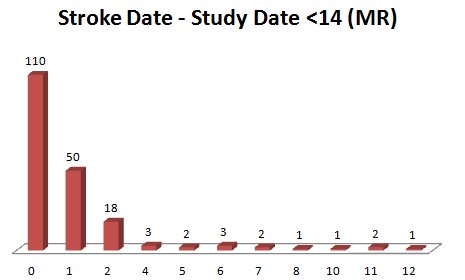
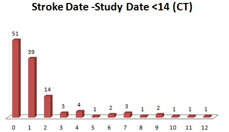

Total Number Of Patients is 328 (Series status is active w/ Stroke Date) Total Number Of Patients Who Have CT Studies is 125 (Patients Who Only have CT Studies is is 83 ) Total Number Of Patients Who Have MR Studies is 245 (Patients Who Only have MR Studies is is 203 ) Total Number Of Studies is 1072 Total Number Of MR Studies is 732 Total Number Of CT Studies is 340
Table Description:
The Above Table Is Histogram Result That
Stroke Date - Study Date <14 On MR Studise
The Total Number Of Patients is 198
|

Table Histogram Result
|
||||||||||||||||||||||||||||
Result Two: Histogram Result Of Stroke Date -Study Date <14 (CT)
Table Description:
The Above Table Is Histogram Result That
Stroke Date - Study Date <14 On CT All Studise
The Total Number Of Patients is 123
|

Table Histogram Result
|
There Is 2 Patient Whose Stroke Date - Study Date Less Than 14 Days Of CT Study Among Patients Whose Stroke Date - Study Date Of MRI studies More Than 13 Days There Are 44 Patients Whose Stroke Date - Study Date More Than 13 Days Of Both MRI And CT Studies.
Threre Are 80 Studies (77 Patients) That Has An MRI Study With a DWI Series Included That Is Less Than 7 Days